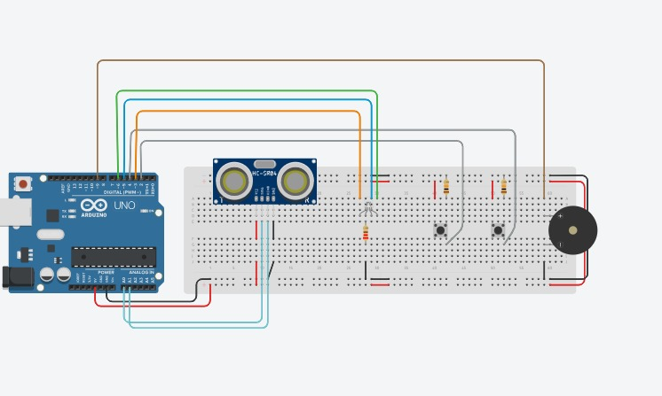

.png)
PROYECTO DE TECNOLOGÍA
Semáforo para controlar colas en IRTRA
Conoce nuestro circuito digital y físico en funcionamiento.
Imagen de nuestro circuito realizado en Tinkercad.

Observa el funcionamiento de nuestro circuito digital.
Observa nuestro circuito físico funcionando.
Información relacionada con nuestro proyecto tecnológico.
El IRTRA Petapa es un espacio recreativo destinado al entretenimiento y convivencia de las familias. Debido a la cantidad de visitantes que puede recibir, es importante contar con sistemas que permitan organizar adecuadamente el ingreso y circulación de las personas.
Cuando existe una gran cantidad de personas esperando para ingresar a determinadas áreas, pueden formarse filas y aumentar los tiempos de espera. Esto puede generar desorganización y dificultar el control del flujo de visitantes.
Controlar la cantidad de personas permite mejorar la organización de los espacios y brindar una experiencia más cómoda a los visitantes. Un sistema automatizado puede ayudar a indicar cuándo existe disponibilidad o cuándo es necesario esperar.
Los sistemas automatizados utilizan componentes electrónicos para detectar información, procesarla y generar una respuesta. En nuestro proyecto, el circuito utiliza un contador de personas y luces LED para representar diferentes estados de acceso.
Consulta nuestra infografía directamente en la página.
A continuación puedes visualizar nuestra infografía completa en formato PDF sin salir de esta página.
Si el PDF no se muestra correctamente, verifica que el archivo infografia.pdf esté en la misma carpeta que este archivo HTML.
Escucha nuestro podcast sobre el proyecto.
Conoce más sobre nuestro proyecto, su problemática, funcionamiento y solución.
🎧 Escuchar nuestro PodcastReflexión final de nuestro proyecto.
Nuestro proyecto del Semáforo Irtra Petapa busca demostrar cómo la tecnología puede utilizarse para resolver problemas relacionados con la organización y el flujo de personas. Mediante un circuito electrónico, un contador y un sistema de luces, se puede representar de manera sencilla cuándo existe disponibilidad y cuándo es necesario esperar. Este proyecto nos permitió aplicar conocimientos de electrónica, programación, diseño web y trabajo en equipo, demostrando que una solución tecnológica puede contribuir a mejorar la experiencia de los usuarios.